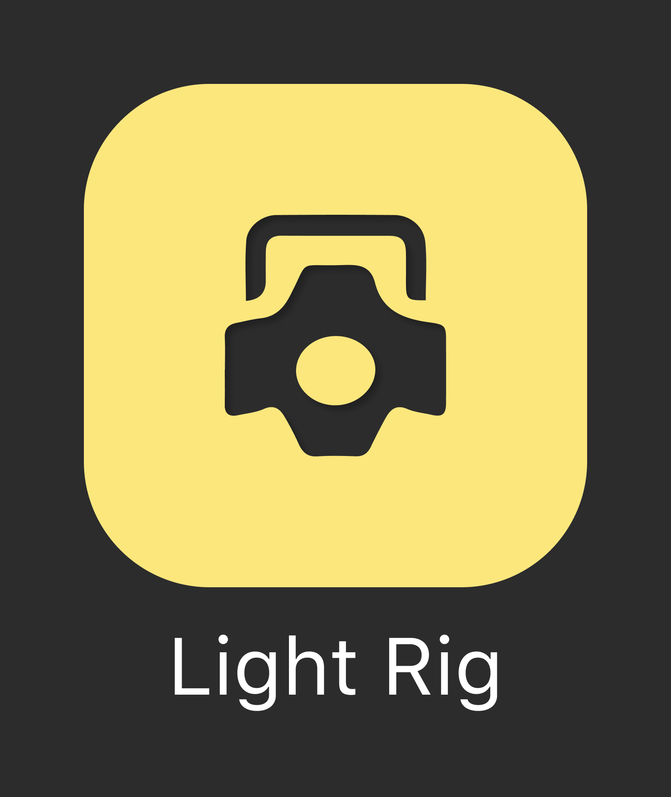
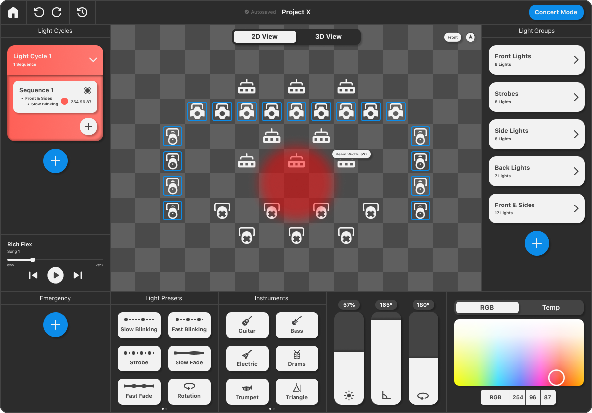
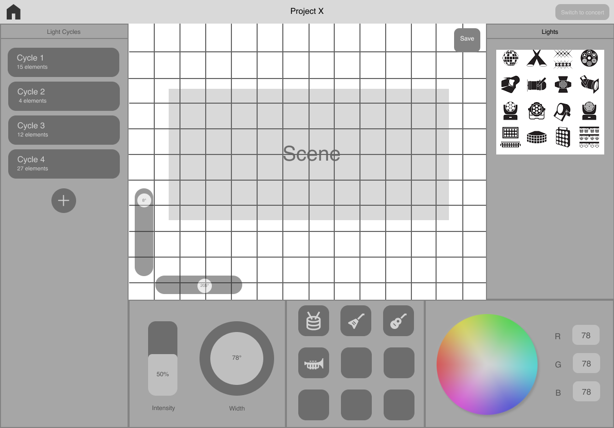
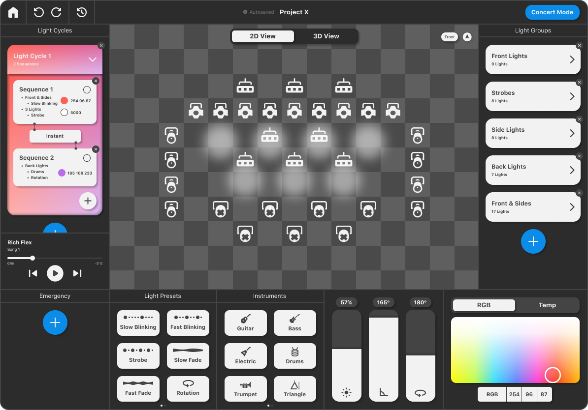
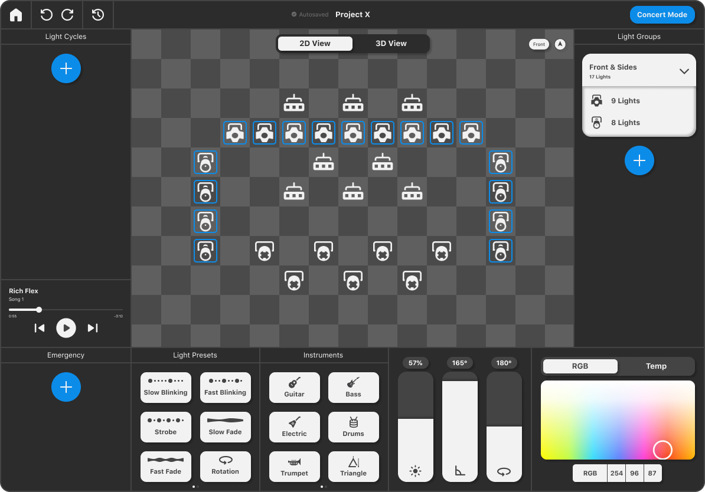
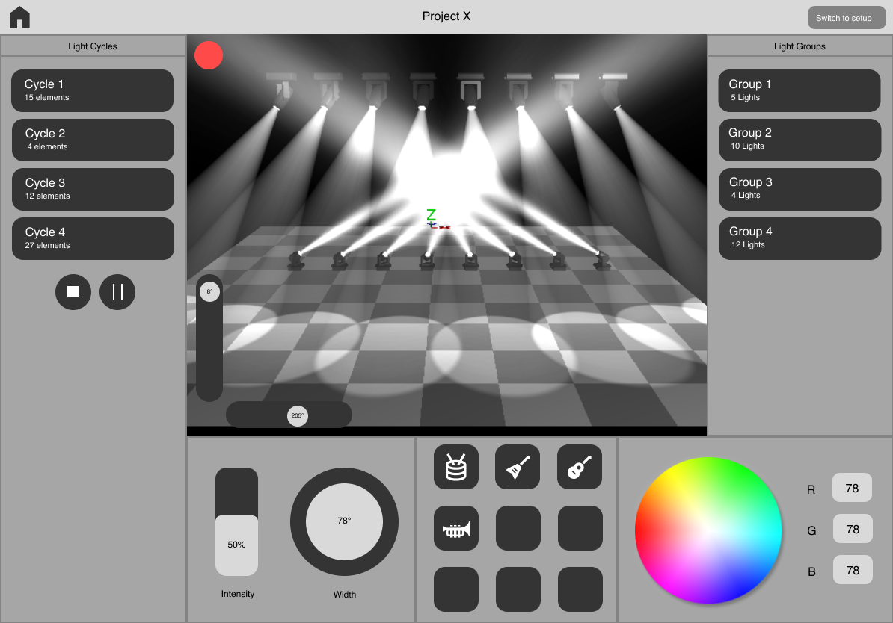
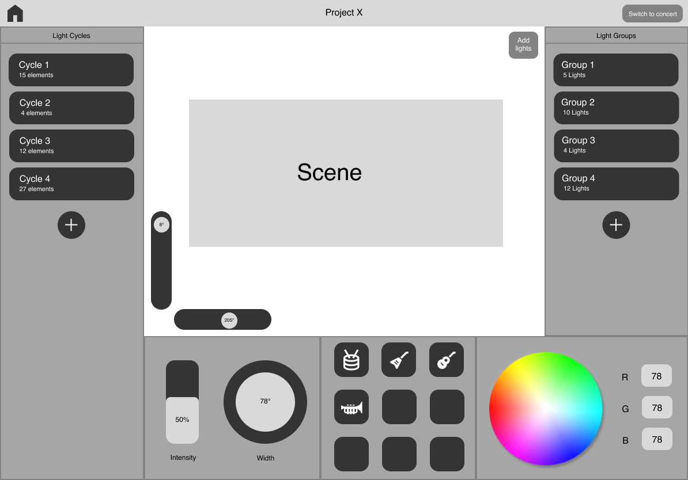

Here are images illustrating the design process and the final results of the application. The market research allowed me to identify existing products in the market, looking into their strengths, weaknesses, and identifying gaps. After this, I started wireframing to conceptualize the overall appearance and user experience of the application. Ultimately, the final product was designed, utalizing components in Figma allowing for easy modification and iteration of the design.







